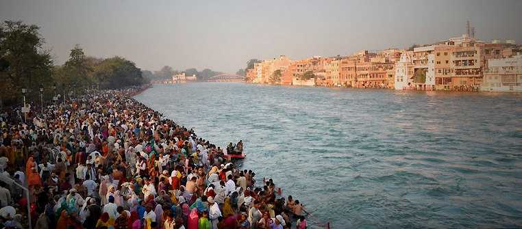
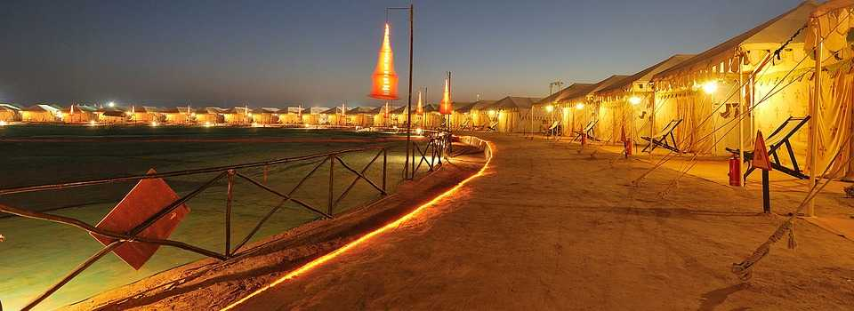

Kumbh Mela is the biggest fair in India. It takes place every 12 years in four cities - Prayagraj (Allahabad), Haridwar, Ujjain and Nashik. The Kumbh Mela in Prayag being the major one is celebrated on a vast scale. Pilgrims from all over the country gather and pay homage to river Ganga. They take dips in the holy water to wash away their sins. Since this festival is celebrated only in 12 years, the government spends generously on the stalls, poojas, kirtans and pilgrimage facilities.
Rann Utsav takes place in the white sand of the Rann of Kutch in Gujarat every year from November to February. During this period, tents are set up, and the region is made in traditional Gujarati style. Educational programmes including folk dances, skits and others are displayed every evening, followed by bonfire night and lavish dining. Rann Utsav is one of the most vibrant festivals in India, which attracts numerous visitors from across the globe and displays the finest traditions of the state
 Back